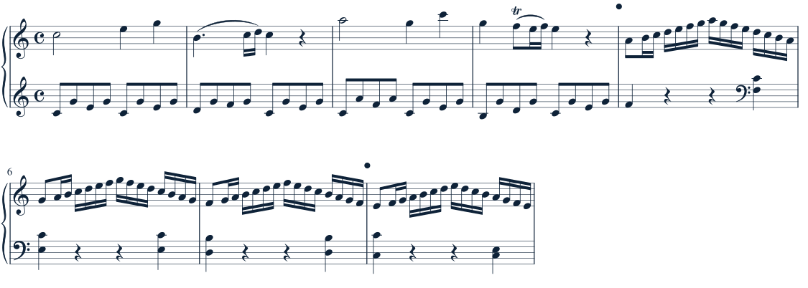

Library
Sonata facile
Mozart · Page 1 · Piano
2 bars to check · Fix it
♩ = 120
C major · 4/4

Scan page 2
Bar 2 selected
Pick a length to change it, or tap one note. Pencil writes straight onto the staff.
Notes
Marks
Ink
♭
♮
♯